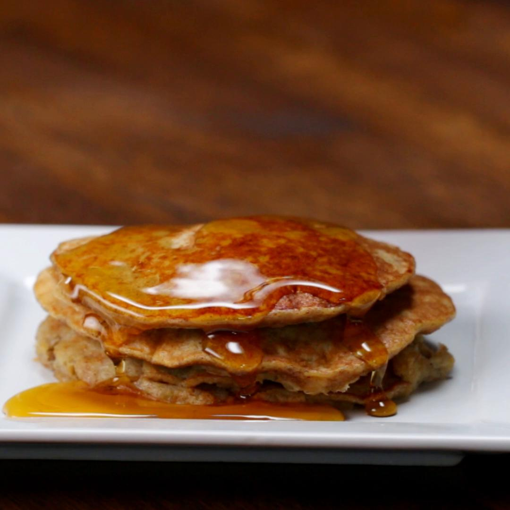

Banana Pancakes

easiest pancake of your life
Ingredients
- 2 Bananas
- 1 egg
- 1 tbsp coconut/avocado oil
- 1 teaspoon salt
- 1 teaspoon cinnamon
Steps
- Assemble your blending apparatus.
- Peel the bananas and dump them in said apparatus.
- Crack the egg and pour that on top of the bananas.
- Cover the blender
- SMASH all the things
- As things are getting pulverized, heat a skillet on medium heat with 3 tbsps of coconut/avocado oil<
- Once the smashing has concluded, and the skillet sufficiently heated, pour the contents from the blending apparatus gently into the skillet. You're free to explore your creativity here in your choice of pancake shape
- Cook both sides for about 5-6mins. Use your eyes and judgement here.
- Everything from here on out is on you. Go crazy.